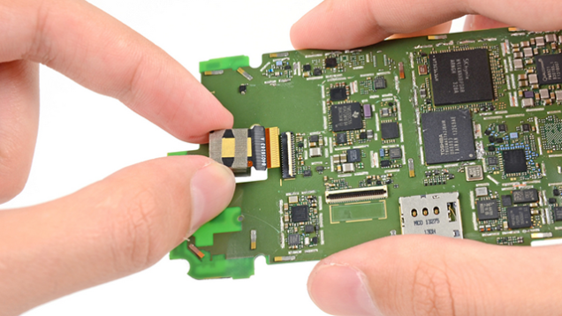

手機硬體好與壞差在哪？
坊間手機挑選方法百百種，手機品牌功能價錢也樣樣不同。該如何在茫茫機海中挑選一支適合自己的手機？一隻CP值高的手機需要什麼？
是價錢？顏色？外型？材質？還是品牌？在亂看坊間秘方、亂信他人推薦之前，不如自己來了解手機的各個硬體的性能。知道手機硬體效能差多少、
知道手機型號後面的英文和數字代表什麼，了解功能也才能了解哪一支是最適合自己的手機。不要被手機業者騙了、也不要被所謂網路達人誤導了。
學會自己挑選手機其實很簡單，從此再也不花冤望錢。
在進入智慧型手機的時代之後，其實手機的整體架構跟電腦幾乎是一樣的。所以電腦的計算機概論的知識基本上可以直接套用在手機硬體上。
但受到手機大小的限制，有一部份的東西的效能會受到限制。雖說科技日新月異，部分高階手機的效能已然勝過不少電腦了。
而手機其實精密的部份很多，一點電路的不同設計都可能有很大的改變，但我們將不對較為艱深的部分最介紹，而著重在簡單精要的幾個大部分。
手機的腦袋 - 中央處理器(CPU)
首先我們要看的就是負責手機的運算部分的中央處理器(CPU)以下簡稱CPU，也就是相當於手機的腦袋的重要部分。
目前手機CPU有三大架構架構這邊看看就好
：ARM、高通、X86。
ARM為最主流架構，有著體積小、功耗低的優勢；基本上都由ARM公司設計好再釋出模板給各廠使用。而高通自主設計架構
是從ARM架構修改而來。至於X86架構就是直接從Intel公司在電腦上的X86架構改良來的。
而品牌上大致上可以分成幾大類：高通(驍龍)、三星(獵戶座)、聯發科(曦力)和英特爾(凌動)。市面上多數非蘋果手機都是採用以上幾家的CPU。
各品牌各有其獨特的設計，但由於過於深入此處便不多加說明。
CPU負責對手機程式內部所需的資料和手機的指令進行運算。
電腦與手機的內部多使用二進位制，所以只有0/1兩種。而CPU便可以快速地對0與1進行運算。
那我們要怎麼去判斷手機的效能高低呢？我們大致可以從比較簡單判定的時脈和核心數來判斷。
時脈
挑選手機時是否常常看到手機的CPU規格後面會寫一些數字一些英文呢？那些就是時脈。那什麼又是時脈呢？
簡單來說就是CPU處理一單位資料的頻率有多快。所以後面英文(ex: MHz, GHz)其實就是頻率的單位。
所以我們可以大致認為數字越大的就是CPU處理資料的頻率越快。所以時脈越高的CPU通常越貴，我們可以想像成這顆腦袋比較聰明、運算能力比較好。
核心數
我們常聽別人說“我的是四核心的欸”、“我的手機/電腦核心數很多欸“，那核心數對於手機和CPU真的有差那麼多嗎？
其實我們可以用一個很簡單的例子來比喻核心，我們可以想像一個核心就是有一個處理資料的馬達。那多核心就是同時有很多馬達在運作。
那所以核心多就很好囉？不一定，你想想看一邊是同時有很多馬達在運作，但另一邊是效能強上很多的單顆馬達在運作。我們便無法輕易的分辨誰好誰壞。
而有些狀況我們就偏偏需要多核心的多工運算，有些時候我們是需要強大的運算能力，所以還要看使用的時機而定。而且有時候單一顆CPU處理效能過快以至於其他周邊跟不上，
那效能也是徒勞。
或許有人會說多核心、高時脈只是種迷思，實際不一定比較好。但是我們只是在這裡提供一個簡單的方法來初步判定CPU的差異。
真的要深入探討，還有很多像是應用處理核心架構、製程工藝、GPU、L2二級緩存、作業系統的優化與手機的DRAM等。
手機的反應速度 - 記憶體(RAM)
RAM通常也是挑選手機的一大重點。而RAM本身是做什麼用的呢？我們回到上面的CPU來說。CPU在處理東西的時候，
會需要快速存取資料，此時我們會需要一個地方擺放預備要給程式和CPU存取的資料的空間。而這種空間本身也要允許高速的存取。
由此而生的便是RAM。那如果RAM不夠了，那需要放資料的空間便會塞車，以至於拖垮整體的速度。
那RAM的單位是什麼呢？我們通常使用MB和GB來表示。由於二進制的關係，在單位換算會有些跟十進制不同的地方。
像是MB到GB的換算是 1024MB = 1GB 而非整數。現在手機技術大致上多為 1~3GB，有部分老手機僅適用512MB也就是0.5GB。
所以挑選的時候可以依自己使用量來選擇需要的RAM數多寡，如果是需要玩遊戲或是需要使用大型程式/APPs的話便需要多一些RAM了。
手機的腦容量 - 內部儲存空間(ROM)
內存空間以下簡稱內存，簡而言之就是你一般放置APPs或是音樂、影片和文件資料的地方。內存空間都是直接跟手機的其他零件做在一起，
所以在你拿到手機時就已經固定了。通常我們拿到一支新手機的時候，會發現手機內存剩下的跟我們手機外面盒子標示不一樣，
不過別擔心，這不是手機商騙你。是有一部份的空間已經拿去裝手機系統了系統後在其他章節說明。
而如果使用著本身有會有大量的資料存儲的需求的話那就要花費較多的金錢去購買比較大容量的手機了。或是用等等下一個章節會介紹的方法來擴充。
其他的將會銜接在下一章節繼續說明。
手機的外接擴充腦容量 - 記憶卡(SD Card)
銜接上一章做介紹的是外接記憶卡(SD Card)以下簡稱SD卡，
跟上一章的內存一樣是屬於一般資料的儲存空間，唯一的差別就是他是用來擴充雞的本身不夠的空間的。
現在多數非蘋果的手機都支援micro SD卡的擴充，讓我們在內存之外可以更有彈性的使用空間。
唯一美中不足的是，在最近幾代版本的安卓系統中都不支援將應用程式從內存搬移出來到外接記憶卡上，
可能要透過其他第三方程式的輔助。
手機的表情 - 螢幕(Monitor)
螢幕的表示法多用解析度來表示，解析度越高越清楚，然其中有許許多多圖學上的概念便不一一解釋了。
現在科技日新月異，在此就不對遠古的技術做詳細介紹。直接殺入現在多數手機使用的技術 - HD高畫質螢幕。
HD 720p
現在手機螢幕解析度大多從這裡起跳，也就是所謂解析度1280x720。當初電視也是從這個解析度開始稱作高清。
Full HD 1080p
好一點的手機，擁有這樣程度的螢幕是基本。現在的旗艦機多數都有Full HD以上的螢幕。而以解析度來說Full HD
便是1920x1080。時至今日，有很多手機甚至擁有其之上的解析度，可能過不了多久Full HD也將成為基本配備吧！
2K HD螢幕
一部分的說法是指解析度 2560X1440，在Full HD之上的解析度。而也有另一部份的說法是指Full HD就是2K。
所以與其在2K、4K這類型的名詞琢磨太久不如就直接用解析度來看更加方便吧！
CS.UTaipei_WEB